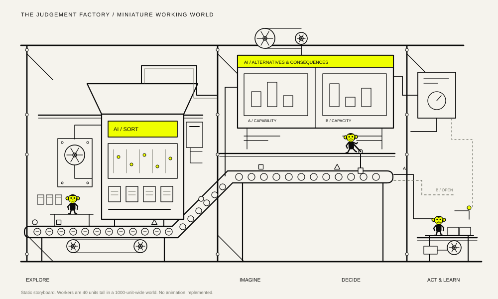
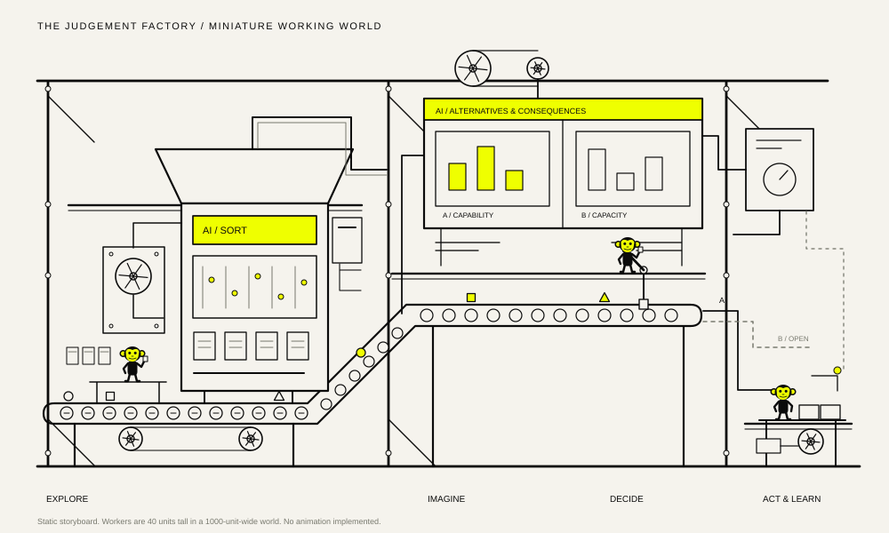
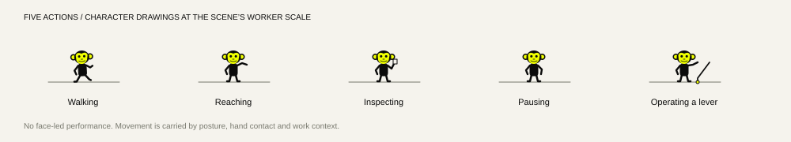

Information keeps arriving
The conveyor, flywheel and small counterweight continue. A tiny receiver checks the incoming objects beside the sorting housing.
The factory leads. Three small workers become details to discover within a larger system. The consequential moment is a quiet pause at a hand-operated gate, while the rest of the machinery keeps working.
Static revision for approval. No animation, Astro route or homepage integration has been implemented. Stage 2 remains paused.


The conveyor, flywheel and small counterweight continue. A tiny receiver checks the incoming objects beside the sorting housing.

Large sorting and alternative displays dominate. The receiver inspects a sample while the rest of the factory remains active.
Only the authorisation gate waits. The decision-maker pauses near the lever; belts, cams and local processing continue.
The worker takes a short step and reaches the lever. The shaft lifts the track gate; one output path activates after that contact.
A piece arrives at the assembly fixture. The small downstream worker reaches to position it while the incoming pipeline continues.
A feedback mark and a small inspection/adjustment close the loop. The assembly stays provisional; the factory does not stop or wipe clean.
Walking, reaching, inspecting, pausing and operating the lever replace the ten expressive pose states. The logo-related ear rings and yellow face remain as small identity cues. Oversized eyes, blinking, head scratches and waves are removed from the proposed choreography.

One small worker and one AI machine remain inside a carefully chosen 560-unit-wide crop. The character geometry stays 40 units tall; it is not redrawn as a large mobile character.
At a 375px viewport with a 335px illustration, the worker is approximately 24px tall, versus approximately 100px in the first mobile proposal. Native controls would remain outside the drawing at comfortable touch sizes.
Compare both mobile specimens ↗
Approve or revise the miniature scale, machine-dominant composition, five-action vocabulary and mobile crop. Stage 2 will only begin after review of this revised composition.
Side-by-side comparison ↗ · Revision and animation plan ↗ · Stage 1 plan and reference analysis ↗